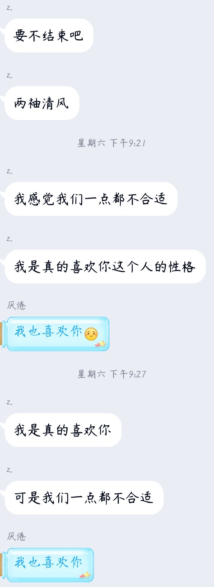
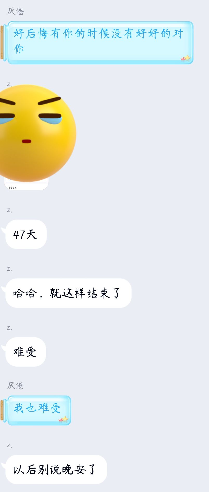

感谢你曾来过我的世界，我小宝贝 
你来时携风带雨，我无处可避
你走时乱了四季，我久病难医
 那晚我们仿佛回到了第一次吵架那一晚，我好像觉得，我们可能又要吵一架了
可是我没有想到，你知己诶和我说：“要不我们结束吧，两袖清风”
我听到这样的话，我有点慌了，我没想到我们会以这样的方式作为结局。我一直在和你说明原因，你嘴中一直说着对我的不满
你想要的，我却不能够给你我全部
我能给的，却又不是你想拥有的
玫瑰在离开小王子的时候说：“我当然喜欢你，没有让你感受到，是我的不对
小王子还说：“可是我毕竟还是太年轻了，不知道如何去爱他”
你像我说明这，我那个时候明白了，我不是忽略，一切都不是我所看到的那样，而是喜欢我的人，用着另外一种方法去表达着，在我眼中，没有看到你的表达，都只是你的忽略罢了
那天是3月21日，我们谈论这个很晚了，我说我们去休息吧，我们缓缓，过一晚再来讨论
3月23日，47天，小猪猪，我们就这样结束吧

那天晚上，你给了我一个确定打答复。你和我说，到目前为止，我还是喜欢你的，但是我们真的不合适吧。3月23日，正式确定了喔，47天，小猪猪，我们就这样结束吧，以后早安和晚安我们也可以不用说了
你说我们之间好可惜，我也觉得好可惜，很多次的时候，我都说我会答应好好对你，不会让你伤心的，我这些都没有做到
你说你做出这个决定是为了我们好，你做出这个决定的时候很难受，我在听到这个决定的时候，也感到非常的难受

我还是想试图去挽留
我一直道歉，一直说着我的不对，试图想去挽留你，但你对着已经看得很淡了，对你丝毫已经没有作用了
我说着我们经常做的事情，我说我们还想和你一起去征战王者峡谷，做一个自带辅王的野王；我说我还想在那战场中荡着秋千，一起悠闲的走着；我说我还想一起在去第五庄园中转转，我会做保护你的前锋，撞飞一切想伤害你的怪物，我们一起跑出庄园
这些都已经做过了
我回想着我们当初说要一起去做的事情
我说，忘了我们说的要晚上一起看恐怖片然后去睡觉吗？忘了我们说要一起走遍祖国的大好河山，然后吃遍天下美味吗？忘了我们说的，当初要一起去做摩天轮，俯瞰我们脚下的世界，我们要一起去做过山车，一起去蹦极，你依靠在我怀里尖叫

这些...你都会找到一个更适合你的人去做的
你一直和我说叫我慢慢的放下你
你叫我慢慢的放下你，你说你会遇到比我更加合适的，你说时间会带走我们之间的一切，慢慢的，我们就好像是彼此生命中的过客。你可以找到另一个陪伴着我的人，但我在也遇不到那个你了。我们之间很有趣，始于游戏，最后也终于游戏。
你说，如果我们有缘，能再次遇见的话，那时候，我们要给彼此一个拥抱后离开。为什么当时没有好好的看着你的样。
你说是我让你体会了生活的甜，生活的不甘于生活的无奈；你说我是你的初恋，但我没有带给你那一丝丝的甜味。我想对你说一句：对不起

我们一直感叹着我们之间的遗憾
雪崩的时候，没有一片雪花是无辜的，但这其中，都是我的问题
“我觉得我们之间好可惜，我都没有好好的对你”。“我们就这样分手吧，我爱过你”。“这都是我的问题，我那时候应该很多聊聊天的，不然你也不会这样”。“你别这样，这不是你的问题，这是我的问题”“我舍不得你，但是已经没必要了，长痛不如短痛”。“你要记住你不要在别人面前谈论到我，那样别人会不开心的”
我问我朋友，两人喜欢着却分开了。他告诉我说，那是其中受到了第三方因素干扰着。我把我们之间的聊天记录默默的备份了，我真的傻。为什么会觉得自己被忽略了呢，QQ聊天记录显示，存在这2G的数据，我真傻，明明我们之间还......喜欢着，却已这样的方式作为结局
送君千里，终有一别
你若安好，便是晴天